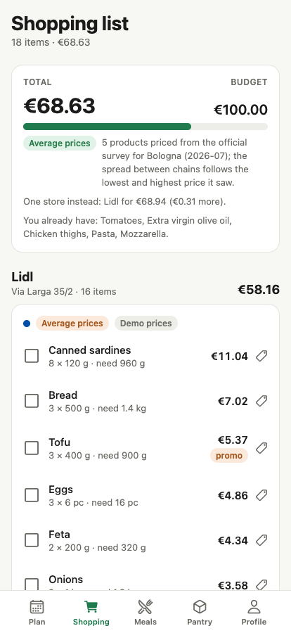
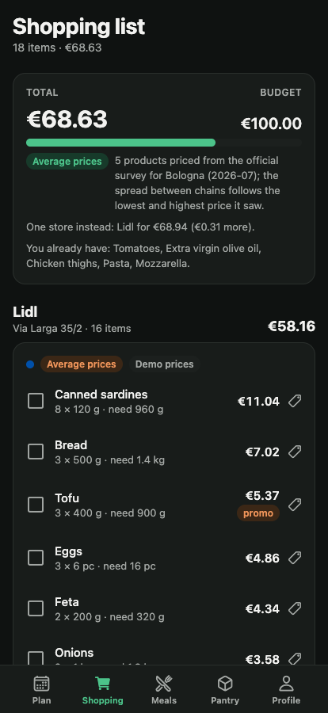
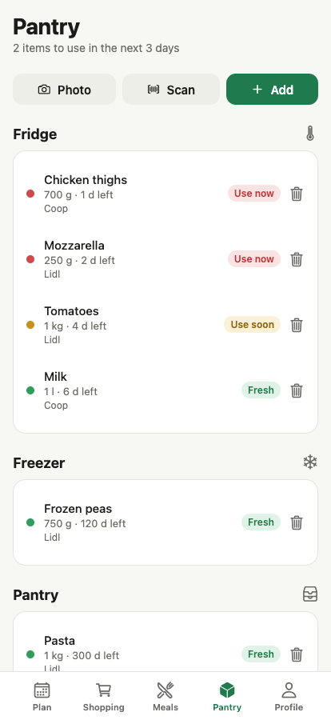
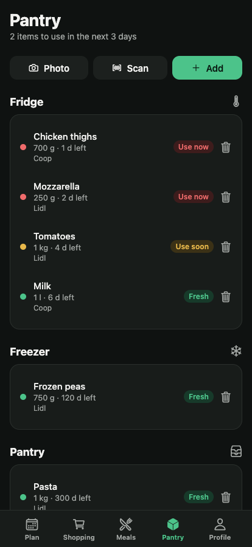
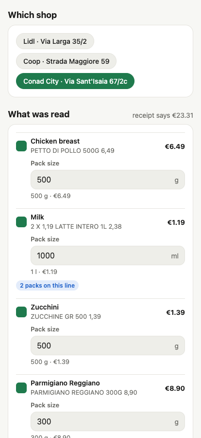
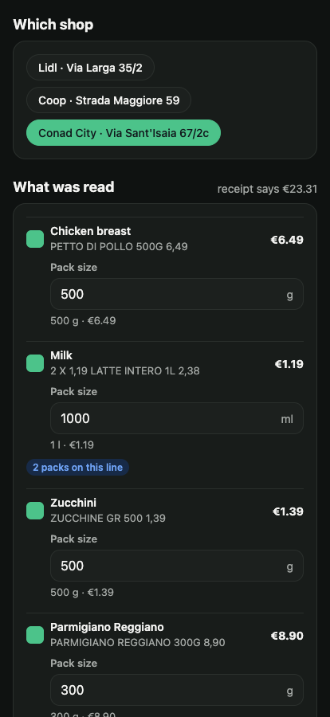
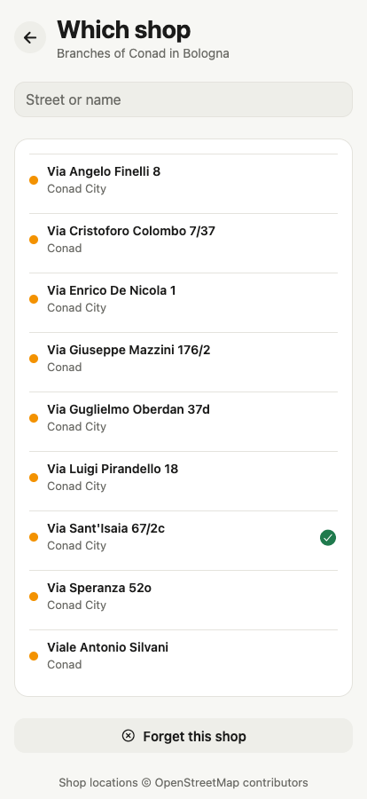
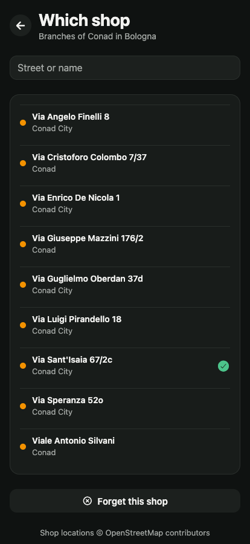

What it looks like








What it does
-
Planned to a budget
The week starts from an amount and the number of people eating. Recipes, portions and shops are chosen to fit it, and the plan says how far under it lands — or by how much it would not.
-
The cheapest split
Say how many shops you are willing to visit. It works out what to buy where, rounds to whole packs, and tells you what the same week would cost in one shop alone.
-
A pantry that nudges
What you bought lands in the pantry with a use-by date, and the plan buys around it. When the chicken has a day left, it offers to move the curry to today.
-
Receipts, read on the phone
Photograph a till receipt and its lines become that shop's prices. A multi-pack is split into the price of one, a weighed line keeps what you paid, and nothing is saved until you tick it.
-
Your actual shops
Branches come from OpenStreetMap, so it is the Lidl on your street, not a made-up address — in any Italian city on the map.
-
Safe calorie targets
Optional: height, weight and a goal set the day's calories and protein. The pace is capped at a safe rate however far the slider is pushed, and the app says when it capped it.
-
Four languages
Italian, English, German and Russian — the interface and every product and recipe in it, with each language's own decimals and plurals.
Where the prices come from
No Italian supermarket publishes its shelf prices openly, so SpesaPlan takes them from wherever they are real, in this order, and every shop in the shopping list says which kind it is using:
-
Your receipts
What you paid, in that shop. A price you scanned or typed beats every other source for that shop and product.
-
The official survey
Osservaprezzi, the Italian Ministry of Enterprise's monthly price survey, per province. Bologna's covers 19 of the 65 products in the catalogue; each chain is placed between the lowest and highest price the survey saw there. No promotion is ever attached to a surveyed price.
-
Estimates
Everything else, labelled "demo prices" on the shop it applies to. They can be switched off, at the cost of a thinner plan.
Esselunga and Conad online-shop prices are available through Pepesto, a paid API. The app can use it through a server of your own; the beta does not.
Where the data lives
On your phone. There is no sign-up: the budget, the household, the plans, the pantry and the prices you scanned stay in the app's own storage. Sync between devices exists, but only through a SpesaPlan server you run yourself, and it knows you by a random code, not by an email address.
The app talks to outside services only for the feature that needs them: OpenStreetMap gets the city name when you pick shops, Open Food Facts gets a barcode when you scan one. Receipt photos never leave the phone — see the privacy policy.
Getting it
It is in open beta on TestFlight. Install Apple's TestFlight app, open the link, and SpesaPlan installs alongside your other apps.
Android and a browser version run from the same code and are not published yet.
What it isn't
Not a price comparison site. With no open prices to read, most of the catalogue stays an estimate until you scan a receipt, and the official survey is monthly and runs a couple of months behind. It plans best for Bologna, whose survey ships with the app, though shops can be picked in any city.
Receipt reading is tested on printed receipts rather than crumpled thermal paper; when the lines do not add up to the receipt's total, the app says so before anything is saved. The recipes are a fixed set of 48.